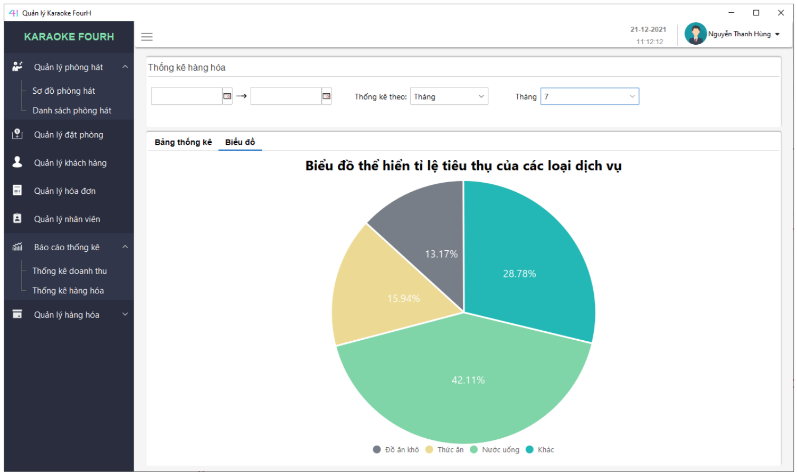

Đăng nhập
- - Người dùng đăng nhập để dùng phần mềm. Phần mềm hỗ trợ người dùng đặt lại mật khẩu khi quên.
- - Người dùng cần nhập số điện thoại hoặc email đã đăng ký trước và bấm nút “Tìm kiếm” để đi đến bước tiếp theo:
-
- Sau khi đã nhập đúng số điện thoại hoặc email thì người dùng cần phải đặt lại mật khẩu và
bấm nút “Đổi mật khẩu” để hoàn thành.
Chức năng người dùng / Đăng xuất
-
- Click vào tên người dùng ở góc trên bên phải và chọn “Đăng xuất”:
Chức năng người dùng / Xem thông tin chi tiết của người dùng
-
- Click vào tên người dùng ở góc trên bên phải và chọn “Hồ sơ”, nhấn nút “Xác nhận” để đóng
giao diện này
Chức năng người dùng / Đổi mật khẩu
-
- Click vào tên người dùng ở góc trên bên phải và chọn “Đổi mật khẩu”, phần mềm sẽ mở
giao diện như dưới. Người dùng chỉnh sửa thông tin và nhấn nút “Lưu thay đổi” để hoàn
thành.
Chức năng người dùng / Xem hướng dẫn
-
- Click vào tên người dùng ở góc trên bên phải và chọn “Hướng dẫn”, phần mềm sẽ mở trang
web hướng dẫn sử dụng chi tiết phần mềm
Sơ đồ phòng hát / Tìm kiếm phòng hát
-
- Nhập tên phòng cần tìm vào ô tìm kiếm (1) và nhấn nút Tìm kiếm.
- Lọc phòng hát theo “Loại phòng hát” bằng cách chọn combobox (2), lọc phòng hát theo tầng ở mục (3).
- Tìm kiếm phòng bằng tên khách hàng hoặc số điện bằng cách nhập tên hoặc số điện thoại vào ô tìm kiếm (4) (chỉ tìm được phòng đang hát).
-
- Người dùng có thể xem số lượng trạng thái phòng ở thanh trạng thái:
-
- Click “Làm mới” để xóa dữ liệu ở các ô tìm kiếm và giao diện trở về mặc định
Sơ đồ phòng hát / Xem ảnh và giá phòng nhanh
-
- Click chuột trái 2 lần để xem ảnh của phòng và các thông tin khác bao gồm giá phòng.
Sơ đồ phòng hát / Thuê phòng
-
- Chọn phòng trống và click vào nút Thuê, sau đó sẽ hiển thị giao diện điền thông tin
cho khách hàng như sau:
-
- Sau khi nhập các thông tin vào phần (4), thì người dùng tiếp tục chọn các loại đồ ăn, uống
ở phần(3) thì những sản phẩm được chọn sẽ hiển thị trong phần (2). Người dùng có thể
tìm đồ ăn, đồ uống nhanh bằng cách tìm kiếm ở phần (1). Nhấn nút “Giao phòng” để hoàn tất,
kết quả như hình dưới:
-
- Ngoài ra người dùng còn có thể Thuê phòng bằng cách click chuột phải vào phòng trống và
chọn “Khách vào hát”:

Sơ đồ phòng hát / Đặt phòng trước
-
- Cách 1: Người dùng click chuột phải vào phòng phòng bất kì và chọn “Đặt phòng”:
-
- Phần mềm hiện lên giao diện đặt phòng trước như bên dưới, người dùng nhập thông tin khách
hàng, ngày đặt cũng như tiền cọc. Rồi sau đó click “Đặt phòng” để hoàn tất.
-
- Cách 2: Người dùng click vào dấu 3 chấm ở góc và chọn “Đặt phòng” như hình:
-
- Phần mềm hiện lên giao diện đặt phòng trước như bên dưới, người dùng nhập thông tin khách
hàng, ngày đặt cũng như tiền cọc, chọn phòng cho khách. Rồi sau đó click “Đặt phòng” để
hoàn tất.
Sơ đồ phòng hát / Đổi phòng
-
- Người dùng click chuột phải vào phòng đang hát và chọn “Đổi phòng”:
-
- Chọn phòng mới và nhấn nút “Đổi phòng”, thông tin khách hàng và tiền sẽ được chuyển qua
phòng mới.
Sơ đồ phòng hát / Cập nhật dịch vụ
-
- Người dùng click chuột phải vào phòng cần thêm dịch vụ và chọn “Cập nhật dịch vụ”:
-
- Người dùng tiến hành thêm các dịch được yêu cầu sau đó click nút “Lưu” để hoàn thành.

Sơ đồ phòng hát / Thanh toán
-
- Người dùng click nút “Thanh toán” hoặc click chuột phải và chọn “Thanh toán”

-
- Người dùng nhập có thể chỉnh sửa các loại dịch vụ đã gọi, có thể nhập “Tiền khách đưa”,
“Chiết khấu” hoặc không nhập. Chọn in hoặc không in hóa đơn, sau đó click nút “Thanh
toán” để hoàn thành.
Sơ đồ phòng hát / Dọn phòng
-
- Người dùng click nút “Dọn phòng” hoặc click chuột phải và chọn “Dọn phòng”, khi đó một
nhân viên phục sẽ được yêu cầu đi dọn phòng. Sau khi dọn xong thì chọn nút “Dọn xong”
hoặc click phải và chọn “Dọn xong”.
Sơ đồ phòng hát / Sửa chữa phòng
-
- Khi phòng hát gặp sự cố thì người click chuột phải vào phòng và chọn “Sửa chữa”, khi đó
nhân viên kỹ thuật sẽ đến sửa chữa tại phòng đó. Khi sửa chữa xong thì chọn nút “Sửa xong”.
Danh sách phòng hát / Tìm kiếm phòng
-
- Nhập tên phòng vào ô tìm kiếm, có thể lọc phòng theo loại ở combobox. Phần mềm sẽ hiển
thị 20 kết quả tìm kiếm ở mỗi trang, có thể xem thêm nhiều kết quả hơn bằng việc click vào
các nút chuyển trang ở bên dưới.
- Khi muốn làm trống ô tìm kiếm và combobox loại phòng và hiển thị lại mặc định thì click vào dấu 3 chấm ở góc trên và chọn “Làm mới”
Danh sách phòng hát / Tạo phòng
-
- Click dấu 3 chấm ở góc trên và chọn “Tạo Phòng”
-
- Sau khi nhập thông tin và thêm ảnh xong thì bấm nút “Thêm” để hoàn thành.
Danh sách phòng hát / Sửa thông tin phòng
-
- Để sửa thông tin phòng hát thì click chuột trái vào biểu tượng chỉnh sửa như hình, người
dùng chỉnh sửa các thông tin cần thiết, sau đó bấm nút “Cập nhật” để hoàn thành.
Danh sách phòng hát / Xóa phòng
-
- Để xóa phòng hát thì click chuột trái vào biểu tượng thùng rác, sau đó nhấn Yes để xóa hoặc
No để hủy thao tác
Quản lý đặt phòng / Tìm kiếm phòng
Có thể tìm kiếm riêng biệt như: tên phòng, tên khách hàng, trạng thái phiếu, ngày đặt của phiếu. Có
thể tìm kiếm kết hợp tất cả các yếu tố trên.
Nút đánh số phía dưới bảng hiển thị trang của dữ liệu, có thể tùy chọn trang hoặc xem
thêm về tổng số trang. Các nút số trang sẽ được cập nhật khi người thực hiện chức năng, nó
tương ứng với tổng số dữ liệu trên bảng / 20.
- - Tìm phiếu đặt phòng của phòng nào đó bằng cách nhập tên phòng vào ô có dòng chữ mờ “Nhập tên phòng”. Những phiếu đặt phòng của phòng đó sẽ được hiển thị bên dưới bảng.
- - Tìm phiếu đặt phòng của khách hàng nào đó bằng cách nhập tên khách hàng đó vào ô có dòng chữ mờ “Nhập tên khách hàng”. Những phiếu đặt phòng của khách hàng đó sẽ được hiển thị bên dưới bảng.
- - Lọc phiếu theo trạng thái: chọn trạng thái muốn hiển thị bên trong hộp dữ liệu “Lọc theo trạng thái”. Những phiếu đặt phòng nào có trạng thái đã được chọn sẽ được hiển thị bên dưới bảng.
- - Tìm theo ngày đặt: chọn ngày muốn tìm tại phần “Tìm theo ngày đặt”. Những phiếu đặt phòng nào có ngày đặt là ngày được chọn sẽ được hiển thị lên bảng.
- - Trường hợp “Tìm phòng”: 001, những phiếu thuộc phòng 001 sẽ được hiển thị lên bảng như sau:
-

- - Trường hợp tìm tên phòng kết hợp với tên khách hàng: (Phòng: 001, khách hàng có chữ "l" trong tên):
-

Làm mới tìm kiếm
Nhấp chuột trái vào nút “Làm mới” sẽ giúp người dùng xóa rỗng các ô nhập dữ liệu tìm kiếm, chọn ngày tìm kiếm và hộp chọn trạng thái trở về trạng thái chưa chọn. Đồng thời dữ liệu trên bảng sẽ được tải lại như ban đầu.
Cập nhật đặt phòng
Nhấp vào nút cập nhật có hình tựa chiếc nút màu xanh vào dòng muốn cập nhật thông tin ngay trên bảng. Điều kiện tiên quyết để sửa thành công là phiếu đặt phòng có trạng thái “Đang đợi”, các trạng thái còn lại thì không thể sửa bao gồm: “Đã tiếp nhận”, “Đã hủy”, “Hết hạn”.
- - Trường hợp người dùng chọn vào phiếu có trạng thái “Đã tiếp nhận” hoặc “Đã hủy” hoặc “Hết hạn” sẽ xuất hiện thông báo sau:
- - Trường hợp người dùng chọn phiếu có trạng thái đang đợi, một cửa sổ khác sẽ xuất hiện như sau:
-

-
- Tại cửa sổ này, người dùng có thể chỉnh sửa lại thông tin của phiếu như ngày-giờ đặt, phòng
mới, tiền cọc.
Sau đó, người dùng nhấp chuột trái vào nút “Chỉnh sửa” trên cửa sổ để cập nhật thông tin mới cho phiếu. Sau khi hoàn thành, một thông báo thành công sẽ xuất hiện như hình dưới đây: - - Sau đó, người dùng nhấp chuột vào nút làm mới để hoàn tất việc sửa và thông tin sau khi cập nhật phiếu sẽ được tải lại.
Quản lý đặt phòng / Hủy phiếu đặt
Điều kiện tiên quyết để hủy đặt thành công là phiếu của bạn đang ở trạng thái “Đang đợi”. Nếu phiếu thuộc các trạng thái sau thì không thể hủy phiếu, gồm “Đã hủy”, “Hết hạn”, “Đã tiếp nhận”.
- - Người dùng sẽ nhấp chuột vào nút có hình tựa thùng rác màu đỏ ngay trên bảng tại vị trí của phiếu muốn hủy.
-

- - Trường hợp người dùng nhấp chuột trái vào nút chỉnh sửa tại vị trí của phiếu có trạng thái thuộc 1 trong 3 trạng thái không thể hủy, mộ thông báo sẽ xuất hiện như hình dưới đây:
- - Trường hợp người nhấp chuột trái vào nút hủy của đúng phiếu có trạng thái “Đang đợi”, một thông báo xác nhận sẽ xuất hiện:
-
- + Nếu người dùng chọn “No”, có nghĩa quá trình hủy phiếu sẽ dừng lại, phiếu sẽ không bị hủy.
- + Nếu người dùng chọn “Yes”, hệ thống sẽ tiến hành hủy phiếu và thông báo kết quả. Kết quả hiển thị dưới đây có nghĩa là phiếu đã được hủy thành công:
-

- - Người dùng xác nhận “OK”, thông tin của phiếu sẽ được tải lại như sau:
Quản lý đặt phòng / Xem thông tin phòng
- - Người dùng nhấp chuột trái 2 lần vào dòng chứa phiếu đặt muốn xem thông tin. Màn hình hiển thị thông tin cụ thể của phiếu đặt sẽ xuất hiện.
Quản lý đặt phòng / In phiếu đặt phòng
- - Khi thực hiện chức năng “Xem thông tin”, người dùng cũng sẽ đồng thời thấy được nút in ở góc trên bên phải màn hình. Nếu muốn in, người dùng nhấp chuột trái vào nút in, cửa sổ tùy chọn in sẽ hiện ra. Người dùng tùy chọn in theo ý muốn để in phiếu.
-


- - Nhấn “OK” để in. Hình của 1 phiếu đặt phòng sau khi in:
-

Quản lý khách hàng / In phiếu đặt phòng
-
- Người dùng nhập thông tin cần tìm vào ô tìm kiếm. Hệ thống sẽ tiến hành tìm kiếm
tương đối theo dữ liệu mà người dùng nhập vào. Người dùng có thể tìm kiếm theo tên khách
hàng, hoặc số điện thoại của khách hàng, hoặc căn cước công dân của khách hàng.
Dưới đây là 1 ví dụ tìm kiếm theo tên khách hàng: (Tên khách hàng: nga). Hệ thống sẽ tiến hành tìm kiếm đươc theo tên khách hàng 1 cách tương đối, những khách hàng nào có “nga” trong tên, sẽ được hiển thị trên bảng.
Số trang cũng đồng thời được cập nhật phía dưới bảng.
Quản lý khách hàng / Làm mới tìm kiếm
- - Khi người dùng nhấp chuột trái vào nút “Làm mới”, hệ thống sẽ tiến hành xóa trắng dữ liệu mà người dùng nhập vào trong ô tìm kiếm, đồng thời dữ liệu trên bảng sẽ được tải lại toàn bộ.
Quản lý khách hàng / Cập nhật khách hàng
Hệ thống cung cấp chức năng ngay trên bảng tại “Quản lý khách hàng”. Người dùng có thể chỉnh sửa thông tin “Số điện thoại” của khách hàng ngay trên bảng.
- - Tiến hành chỉnh sửa một khách hàng: dưới đây là thông tin trước khi sửa của một khách hàng có mã "KH0000001".
- - Nhấp chuột trái 2 lần vào ô số điện thoại:
-

- - Tiến hành sửa: người dùng nhập thông tin cần sửa vào ô “Số điện thoại”, sau đó nhấn “Enter” hoặc nhấp chuột trái 1 lần để hoàn tất.
-

- - Khi người dùng nhập sai định dạng, 1 thông báo “không hợp lệ” sẽ xuất hiện như hình trên (cụ thể là nhập hơn 10 số). Ngược lại, nếu nhập đúng, hệ thống cũng sẽ thông báo “thành công” cho người dùng.
- - Người dùng nhấn “OK” để xác nhận. Sau đó, dữ liệu sẽ được tải lại như hình dưới đây:
-

Quản lý hóa đơn / Tìm kiếm hóa đơn
Khung phía trên của giao diện “Quản lý hóa đơn” bao gồm toàn bộ chức năng tìm
kiếm dữ liệu:

Phần 1: Tìm kiếm theo thời gian (ngày lập hóa đơn).
Tất cả 5 mục trong phần (1) có thể tìm kiếm theo từng mục riêng biệt, cũng có thể tìm kiếm kết hợp cả 5 mục.
-
- Mục 1: Tìm kiếm theo thời gian (từ)
-
Khi người dùng chọn ngày trong mục (1), những hóa đơn được lập từ ngày mục (1)
tới ngày lập hóa đơn gần nhất (nếu mục 2 rỗng) sẽ được hiển thị lên bảng:
Như ví dụ dưới đây: những hóa đơn từ ngày 20-11-2021 đến ngày lập hóa đơn gần nhất là 30-11-2021 sẽ được hiển thị lên bảng, tất cả gồm 5 trang dữ liệu.

-
Nếu mục (2) cũng được chọn ngày, hệ thống sẽ tiến hành tìm kiếm những hóa đơn có ngày
lập từ mục (1) đến mục (2).
Như hình dưới đây: dữ liệu sẽ được tìm kiếm những hóa đơn có ngày lập từ 20-11-2021 đến 22-11-2021. Kết quả gồm 1 trang dữ liệu.
-
Khi người dùng chọn ngày trong mục (1), những hóa đơn được lập từ ngày mục (1)
tới ngày lập hóa đơn gần nhất (nếu mục 2 rỗng) sẽ được hiển thị lên bảng:
-
- Mục 2: Tìm kiếm theo thời gian (đến)
-
Khi người dùng chọn ngày trong mục (2), những hóa đơn từ thời điểm đầu tiên được
lập (nếu mục 1 rỗng) tới ngày lập hóa đơn mục (2) sẽ được hiển thị lên bảng.
-
Khi người dùng chọn ngày trong mục (2), những hóa đơn từ thời điểm đầu tiên được
lập (nếu mục 1 rỗng) tới ngày lập hóa đơn mục (2) sẽ được hiển thị lên bảng.
-
- Mục 3: Lọc theo năm
-
Người dùng có thể tùy chọn năm trong hộp dữ liệu mục (3) bằng cách nhấp chuột trái
vào nó để lọc ra hóa đơn cụ thể vào năm nào. Mục (3) sẽ kết hợp với mục (1) và mục (2)
để
khoanh vùng dữ liệu nhỏ hơn.

Hệ thống tìm kiếm những hóa đơn từ ngày 29-12-2020 đến ngày 03-01-2021 và lọc ra những hóa đơn trong năm 2020 hiển thị lên bảng
-
Người dùng có thể tùy chọn năm trong hộp dữ liệu mục (3) bằng cách nhấp chuột trái
vào nó để lọc ra hóa đơn cụ thể vào năm nào. Mục (3) sẽ kết hợp với mục (1) và mục (2)
để
khoanh vùng dữ liệu nhỏ hơn.
-
- Mục 4: Lọc theo quý
-
Tương tự như mục (3), người dùng có thể tùy chọn quý trong hộp dữ liệu khi nhấp chuột
trái
vào nó để lọc ra những hóa đơn trong quý cụ thể nào đó. Mục này thường kết hợp mục (1),
mục (2)
và cả mục (3) để khoanh vùng dữ liệu nhỏ hơn.

Hệ thống tìm kiếm những hóa đơn trong khoảng từ ngày 29-12-2021 đến 03-01-2021 thuộc quý 4 của năm 2020.
-
Tương tự như mục (3), người dùng có thể tùy chọn quý trong hộp dữ liệu khi nhấp chuột
trái
vào nó để lọc ra những hóa đơn trong quý cụ thể nào đó. Mục này thường kết hợp mục (1),
mục (2)
và cả mục (3) để khoanh vùng dữ liệu nhỏ hơn.
-
- Mục 5: Lọc theo tháng
-
Tương tự mục (3) hoặc (4), ở mục (5), người dùng cũng nhấp chuột trái vào hộp dữ
liệu tháng để tìm kiếm những hóa đơn của tháng cụ thể nào đó. Mục này cũng được kết hợp
với mục (1), (2), (3), (4) để khoanh vùng dữ liệu nhỏ hơn.
Hệ thống sẽ tìm kiếm những hóa đơn có ngày lập nằm trong khoảng 29-12-2020 đến 11-03- 2021 thuộc tháng 1 của quý 1 trong năm 2021.
-
Tương tự mục (3) hoặc (4), ở mục (5), người dùng cũng nhấp chuột trái vào hộp dữ
liệu tháng để tìm kiếm những hóa đơn của tháng cụ thể nào đó. Mục này cũng được kết hợp
với mục (1), (2), (3), (4) để khoanh vùng dữ liệu nhỏ hơn.
Phần 2: Tìm kiếm cụ thể (theo cột)
-
- Mục 6: Chọn cột cần tìm
-
Hộp dữ liệu ở mục 6 chứa 3 cột dữ liệu để tìm là “Mã hóa đơn”, “Khách hàng” sẽ
được tìm theo tên khách hàng và “Phòng” sẽ được tìm theo tên phòng hát. Người dùng có
thể chọn 1 trong 3 tiêu chí cụ thể trên để tìm ra được hóa đơn mình muốn.
Mỗi khi người dùng chọn cột nào đó, ô dữ liệu mục (7) sẽ hiện chú thích mờ để người dùng hiểu dữ liệu được tìm theo tiêu chí nào.

-
Hộp dữ liệu ở mục 6 chứa 3 cột dữ liệu để tìm là “Mã hóa đơn”, “Khách hàng” sẽ
được tìm theo tên khách hàng và “Phòng” sẽ được tìm theo tên phòng hát. Người dùng có
thể chọn 1 trong 3 tiêu chí cụ thể trên để tìm ra được hóa đơn mình muốn.
-
- Mục 7: Ô nhập dữ liệu tìm kiếm
-
Mục này kết hợp với mục (6) để tìm kiếm. Người dùng sẽ nhập dữ liệu tương ứng với
dữ liệu đã chọn ở mục (6).
Tìm theo mã:
Tìm theo khách hàng:
Tìm theo phòng:

-
Mục này kết hợp với mục (6) để tìm kiếm. Người dùng sẽ nhập dữ liệu tương ứng với
dữ liệu đã chọn ở mục (6).
Quản lý hóa đơn / Làm mới tìm kiếm
Nút “Làm mới” màu xanh góc phải ở khung phía trên sẽ thực hiện chức năng này. Khi người dùng nhấp chuột trái vào nút “Làm mới”. Toàn bộ dữ liệu người dùng chọn hay nhập ở khung phía trên sẽ được trở về trạng thái chưa chọn hoặc rỗng, đồng thời dữ liệu trên bảng sẽ được tải lại toàn bộ.
Quản lý hóa đơn / Xem hóa đơn
-
Người dùng nhấp chuột trái 2 lần vào dòng chứa hóa đơn muốn xem, một khung chứa
thông tin chi tiết của một hóa đơn sẽ hiện ra bên phải.
-
Thông tin cụ thể:

Quản lý hóa đơn / In hóa đơn
-
Khi người dùng nhấp chuột trái vào dòng hóa đơn để xem thông tin, một khung chứa
thông tin chi tiết hóa đơn hiện về phía bên phải màn hình. Trên khung chứa này, ở góc trên
bên phải có 1 nút “IN”, người dùng nhấp chuột trái vào nút “IN” thì một khung chứa thông
tin in ấn sẽ hiện ra.

-
Người dùng kiểm tra thông tin
muốn in rồi nhấn “OK” để in. Hóa đơn sau khi in hiển thị như hình dưới đây:

Quản lý hóa đơn / Sắp xếp hóa đơn
-
Người dùng có thể sắp xếp dữ liệu tăng hoặc giảm ngay trên bảng dữ liệu bằng cách
nhấp chuột trái vào tên cột dữ liệu, dữ liệu sẽ được sắp xếp lại theo ý muốn. Mặc định dữ
liệu được sắp xếp giảm dần theo ngày lập hóa đơn.
-
Dữ liệu được sắp xếp lại tăng dần theo mã hóa đơn tại trang đang hiển thị trên màn hình.
Dấu mũi tên ngay tên cột thể hiện người dùng đã nhấp chuột và thực hiện chức năng sắp xếp cột.
Dữ liệu được sắp xếp theo “Tổng tiền mặt hàng” tăng dần.

Quản lý nhân viên / Tìm kiếm
-
Chọn cột để tìm kiếm, sau đó nhập thông tin vào ô tìm kiếm(mặc định sẽ là tìm kiếm theo tên).
Có thể lọc nhân viên theo Giới tính, Loại nhân viên hoặc Ca làm. Khi click nút Làm mới thì các
ô tìm kiếm, các ô lọc nhân viên sẽ trở về mặc định.
Người dùng có thể xem thêm nhiều kết quả hơn bằng việc click vào các nút chuyển trang ở bên dưới bảng nhân viên
Quản lý nhân viên / Thêm nhân viên
-
Click chuột trái vào nút Thêm
-
Sau khi bấm nút Thêm sẽ hiện form như bên dưới:
-
Sau khi nhập thông tin xong thì bấm nút :
- + Thêm: để lưu xuống cơ sở dữ liệu.
- + Làm mới: xóa tất cả nhưng gì đã điền vào form.
Sau khi thêm sẽ hiển thị thông báo “Thêm thành công”, bấm nút OK để xác nhận -> form sẽ được làm mới như lúc đầu.

-
Người dùng click nút X (hoặc click ra vùng bên ngoài) để tắt giao diện thêm nhân viên
Quản lý nhân viên / Xem và cập nhật thông tin nhân viên
-
Click chuột trái 2 lần vào nhân viên cần xem thông tin -> Hiện ra tab thông tin chi tiết của
nhân viên đó.
-
Chọn tab “Sửa” để sửa thông tin -> Bấm nút Lưu để lưu thông tin xuống cơ sở dữ liệu.
Báo cáo thống kê / Thống kê doanh thu
-
Chọn báo cáo thống kê -> chọn thống kê doanh thu ta được giao diện bên dưới
-
Chọn thống kê theo ngày hoặc thống kê theo tháng/năm, sau đó bảng sẽ hiển thị danh sách
các hóa đơn và tổng tiền hóa đơn đó, tổng số hóa đơn đã thống kê được và tổng tiền trong
khoảng thời gian đã chọn, sự chênh lệch theo tháng/năm

-
Phần mềm cũng có thể trực quan hóa dữ liệu bằng biểu đồ khi thống kê bằng tháng/năm bằng
cách chọn nút biểu đồ
-
Chọn loại phòng nếu chỉ muốn thống kê doanh thu 1 loại phòng nhất định
-
Nếu muốn xuất danh sách ta chọn nút xuất danh sách phần mềm sẽ hiển thị cửa sổ để chọn
đường dẫn lưu file excel
Báo cáo thống kê / Thống kê hàng hóa
-
Chọn báo cáo thống kê -> chọn thống kê hàng hóa ta được giao diện bên dưới, tương tự
thống kê doanh thu ta cũng có thống kê theo ngày hoặc thống kê theo tháng/năm
-
Chọn thống kê theo ngày hoặc thống kê theo tháng/năm, sau đó bảng “Các sản phẩm bán
chạy” sẽ hiển thị danh sách các sản phẩm đã được sử dụng trong khoảng thời gian đã chọn và
số lượng nhập vào của sản phẩm, tổng trị giá và tổng tất cả
Bảng “Tỉ lệ tiêu thụ của các loại sản phẩm” sẽ hiển thị danh sách các loại sản phẩm và phần trăm sử dụng trong khoảng thời gian đã chọn tổng trị giá và tổng tất ca

Quản lý hàn hóa / Xem mặt hàng
-
Chọn quản lý hàng hóa -> chọn chọn xem mặt hàng ta được giao diện bên dưới, bảng hiển
thị danh sách thông tin mặt hàng hiện có
-
Nếu muốn tìm thông tin của một sản phẩm nào đó ta cần nhập thông tin vào ô tìm kiếm và có thể
chọn tiêu chí để giới hạn kết quả tìm kiếm
-
Chọn xuất file nếu muốn xuất danh sách mặt hàng, phần mềm sẽ hiển thị cửa sổ xuất file
để chọn đường dẫn
Quản lý hàn hóa / Thêm mặt hàng
-
Chọn quản lý hàng hóa-> chọn thêm mặt hàng ta được giao diện bên dưới bao gồm thông
tin của mặt hàng và bảng danh sách mặt hàng có trong 1 lô hàng
-
Nhập thông tin của mặt hàng
-
Nếu là một sản phẩm mới hoàn toàn ta sẽ tích vào ô sản phẩm mới như hình dưới và nhập tên
sản
phẩm
-
chọn nút thêm để thêm sản phẩm vào danh sách
-
Nếu không muốn nhập sản phẩm nào nữa thì chọn hàng cần xóa và nhấn nút phải chuột để hiển thị
xác nhận xóa nhập sản phẩm
-
Có thể xem,sửa hoặc thêm thông tin của 1 nhà cung cấp bằng cách chọn nút thêm nhà cung cấp
hoặc nút xem thông tin